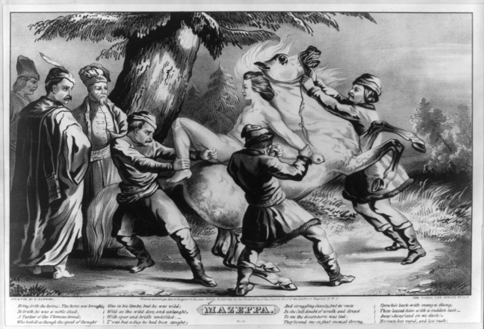
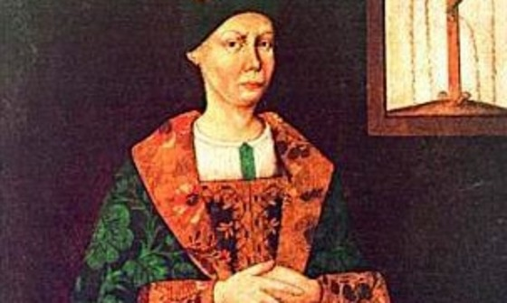
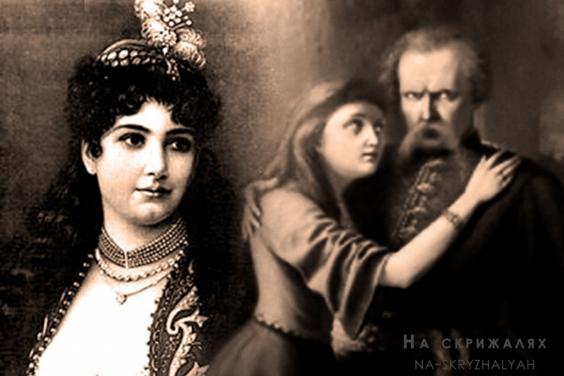
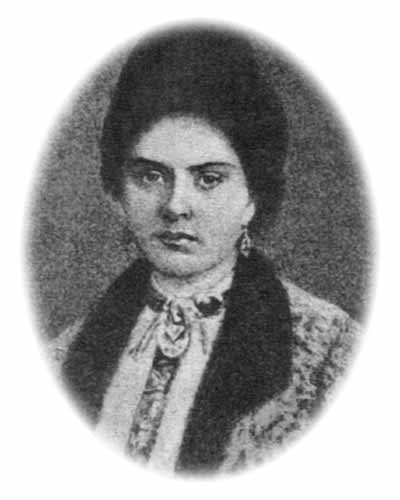

Коханка пані Фальбовська. Не перший і не єдиний скандал
Мазепі приписували не одну коханку – видний амбітний парубок привертав увагу багатьох знаних шляхтичок, серед яких була навіть впливова вдова Анна Дольська, родичка польского короля. Але саме зв’язок з дружиною польського шляхтича Фальбовського став не просто скандалом, а й сюжетом для поем найвідоміших письменників.
Під час служби при польському дворі короля Іоана-Казимира молодий, запальний і православний Іван зчинив бійку через образи з боку таких же слуг – затятих католиків. За це молодика могли засудити навіть до смертної кари, а замість цього відлучили від двору і відправили… назад до мами на Волинь – обдумати свою поведінку. В перервах між «обдумуванням» Мазепа шукав собі заняття – виходив у світ, налагоджував стосунки з поважними людьми. І якось з візитом ввічливості зайшов для знайомства у сусідське помістя пана Фальбовського.
Далеко не святий гетьман
Старого шляхтича знала вся вельможна Волинь і заздрила не лише його статкам, а й тому, що у нього молоденька гарненька дружина. Її ім’я історія не зберегла, але любовна історія з нею ледь не коштувала Мазепі репутації. Він на диво зачастив до Фальбовських, а з часом не соромився навідуватися в їхній дім і у відсутність господаря. Старому нашіптували різні плітки, аж доки він сам не застукав молодих коханців на гарячому…
За переказами, Мазепа такого позору не знав ніколи: Фальбовський велів слугам прив’язати коханця так як, його впіймали, – голим – до коня і на ньому випустити в люди. Кажуть, в костюмі Адама майбутній козацький ватажок «проїхав» не одне волинське село, аж поки якісь добрі люди зжалилися і зняли Мазепу з коня.
Історики стверджують, що насправді цей факт трошки перебільшено, і старий Фальбовський обмежився лише сваркою, але серед вельмож і при дворі розповідав саме про таке покарання для зрадника. Начебто розповідав з помсти. Але звідки тоді аж три літературні обробки? Першим вигнання голого коханця-Мазепи описав Вольтер в «Історії Карла XII». За ним Байрон у своїй поемі «Мазепа», а потім ще й Гюго в такій же поемі, але власній.
Ганна Фридрикевич. Перша і єдина дружина
Офіційною дружиною Мазепи стала донька білоцерківського полковника Половця. Вона була вдовою, значно старшою за Івана і ростила двох дітей від першого шлюбу. Іван ставився до неї з щирою шаною, її сина й дочку всиновив, але всі розуміли, що для велелюбного молодого чоловіка, який мав найвродливіших жінок, шлюб з немолодою і не дуже вродливою Ганною – швидше, розрахунок, аніж несамовите кохання. Та й стрімка кар’єра Мазепи, яка почалася саме після цього одруження, викликала багато пліток і схожих висновків. Іван завдяки тестю та його знайомствам швидко увійшов до кола тодішнього гетьмана правобережжя Петра Дорошенка і завойовував «позиції» серед козацьких ватажків.
За деякими джерелами, дружина не розділяла амбіцій Мазепи – їй хотілося сімейного затишку, а не вічних чоловікових військових походів. Вона дуже мріяла про спільних дітей і навіть народила Івану сина, втім він помер ще немовлям, а Мазепа так і залишився без рідних по крові нащадків. Однак до дітей Ганни він ставився, як до своїх. З пасинка виростив гідного сотника і відписав йому кілька сіл. Пасербиці добрав вигідну партію – сина заможного полковника Михайла Громики. Щедрість Мазепи до прийомних дітей була цілком виправданою і правильною: за 20 років шлюбу з Анною він примножив і свої, і її статки до неймовірних за тими мірками розмірів: був власником майже 20 тисяч дворів в Україні і понад 4 тисяч дворів на півдні Росії.
Мав свою історію кохання і український поет Володимир Сосюра, його друга дружина Марія Данилова була і його найбільшим коханням, і водночас шпигункою, яка робила на нього доноси.
Мотря Кочубей. Перше і єдине кохання
Пізнє і найщиріше, на яке лише здатний зрілий чоловік, наділений владою, зобов’язаннями і можливостями. Мотря теж його неймовірно кохала, і вони могли жити довго і щасливо, якби не одне «але». Мотря була хрещеницею Мазепи, втричі молодшою за нього: він тримав її немовлям у церкві, не зглянувся, як вона виросла у соковиту 16-річну красуню, а йому сповнилося 65. Сивина – в бороду, біс – в ребро.
Мазепа просив її батька Василия Кочубея – свого кума і генерального суддю благословити їхній шлюб, звертався до церкви за дозволом, але… За церковними канонами батьки та похресники не мають права одружуватися. Кочубей міг би закрити очі на офіційні статуси, бачачи щире кохання, але його дружина здійняла галас і називала Мазепу ледь не збоченцем, а доньку блудницею, заборонивши їй навіть бачитися з гетьманом.
До речі, на наших сторінках ви можете прочитати і про коханих жінок Тараса Шевченка.
Кохання на крові
Мазепа кохав Мотрю до останніх своїх днів, писав їй ніжні листи і передавав подарунки: “Моє серденько, мій квіте рожаний! Сердечно на теє болію, що надалеко від мене їдеш, а я не можу очиць твоїх і личка біленького видіти; через сеє письмечко кланяюся, всю тебе цілую любезно… Гостинця-книжечку і обручик діамантовий прошу теє завдячне прийняти, а мене в любові своїй невідмінно ховати, заки дасть Бог з ліпшим привітаю. За тим цілую уста коралевії, ручки біленькі і всі приваби тільця біленького, моя любенько кохана».
Мотря довго не могла змиритися з тим, що ніколи не буде з Мазепою: плакала, відмовлялася їсти, виходити в люди. Кочубеї були впевнені, що на ній чари: мовляв, Мазепа просив у Мотрі локон волосся, а вона йому передавала свою сорочку – приворожена. Василь
Кочубей затаїв невимовну лють, силою видав Мотрю заміж за свого полкового суддю і кілька років писав на Мазепу доноси, за що й поплатився. Кочубея з зятем після чергової змови проти гетьмана схопили: першого стратили, другого відправили до Сибіру. Мазепа їх не помилував, хоча міг. Мотря, вбита подвійним горем чи то стала черницею і померла в глибокій старості, чи то збожеволіла і наклала на себе руки – є дві версії. Але одне достеменно: це було велике і справжнє кохання…
Текст для тренування по каскадності. Дитячі вірші.
За пліт під обід вибралась невдаха
І для мене з братом
А потім замісила в діжі великій тісто.
Сама ж - у пічку сіла, щоб пиріжечки їсти!
Надумала спочити ворона у затишку.
І у житі між стеблинок
Стигле жито і волошки світло-сині, то - мов прапор України!